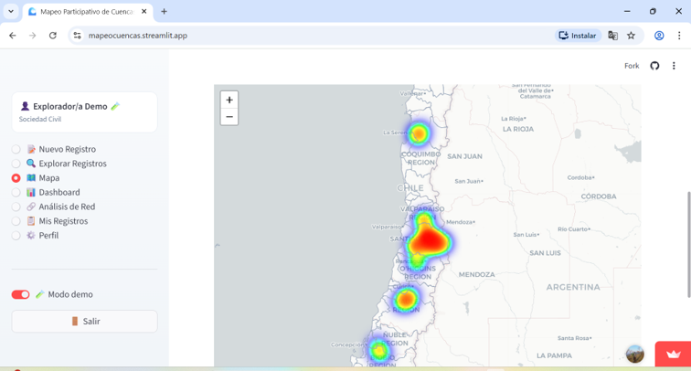
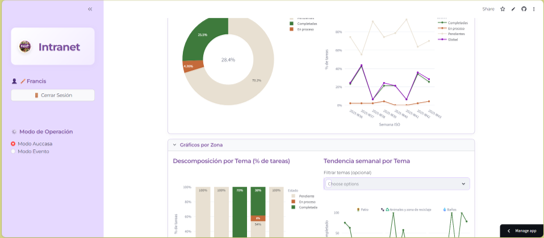

Demo pública
Demo pública
Indagación Regenerativa
Motor de diagnóstico multidimensional basado en la Flor de la Permacultura.
- Diagnóstico de 10 dimensiones del espacio
- Plan de acción priorizado por etapas
- Seguimiento visual del avance
Construimos herramientas digitales a medida para organizaciones que necesitan medir, comunicar y escalar su impacto ambiental y social.
Dashboards, plataformas web, APIs, bases de datos y herramientas educativas. Cada solución se diseña para tu contexto específico.
Plataformas funcionales construidas para proyectos reales. Demos públicas y soluciones a medida.
Demo pública
Motor de diagnóstico multidimensional basado en la Flor de la Permacultura.
 Demo pública
Demo pública
Base de datos inteligente de cultivos para agroecología y agroforestería.
 Demo pública
Demo pública
App interactiva para construir teorías del cambio en proyectos de impacto.

Demo públicaPlataforma colaborativa para analizar territorios de cuenca y conflictos socioambientales.
 Demo pública
Demo pública
Directorio interactivo y mapa global de actores regenerativos.

A medidaPlataforma interna para centralizar acuerdos, roles, documentos y métricas financieras.
ERP simplificado para eventos comunitarios con POS y liquidaciones automáticas.
Trabajamos con ONGs y fundaciones que necesitan reportar impacto, startups climate tech que requieren infraestructura digital, municipalidades con plataformas de monitoreo territorial y centros educativos con herramientas pedagógicas interactivas.

Desarrollamos una plataforma digital a medida para centralizar información crítica del equipo médico, digitalizando procesos que antes dependían de hojas de cálculo y correos. El sistema permite gestionar fichas y reportes desde un entorno seguro y accesible para todo el equipo.

Diseñamos e implementamos herramientas digitales para la gestión de un centro de agroecología y educación ambiental: seguimiento de acuerdos, objetivos, finanzas y actividades en una sola plataforma interna.